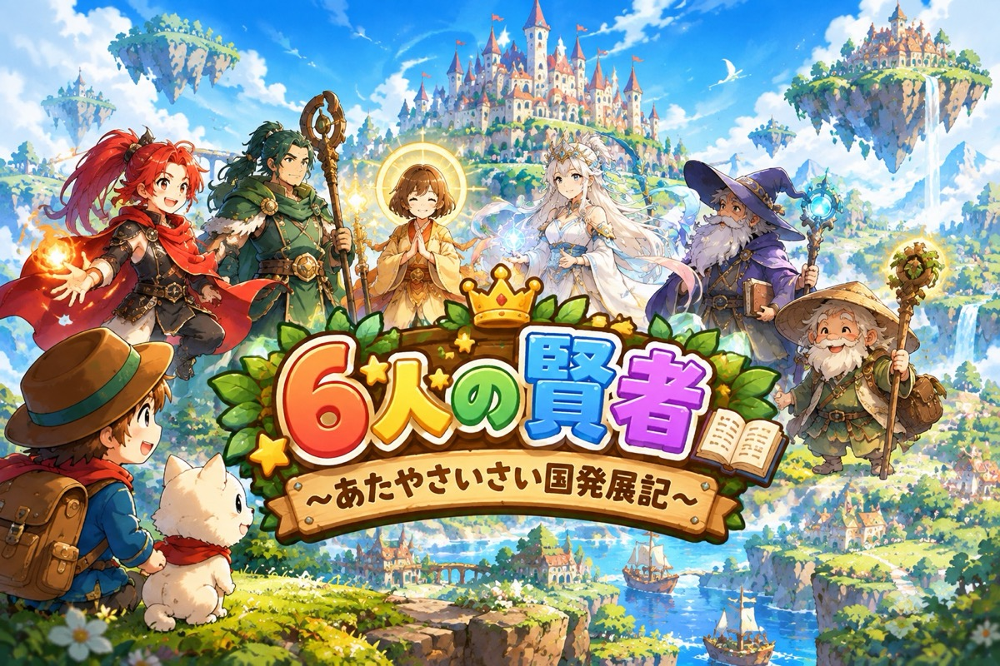
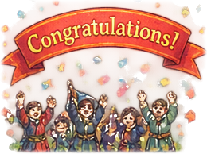

まっさらな 国を さかえさせるのが、きみの しごと。
6人の けんじゃに 6回だけ そうだんできます。
おなじ人に なんども たのんでも いいよ。
だれに、どの順番で たのむかで、国の すがたが かわります。
めざせ、はってん 100%！
国に 建物が できたり 何かが おきたりすると、
社会（地理・歴史・公民）の おはなしが 読めるよ。
きろく（さいこうの はってん度・見つけた けつまつ・しゃかいノート）は、この端末の ブラウザの中だけに のこります。
王さま
だれに そうだんする？
